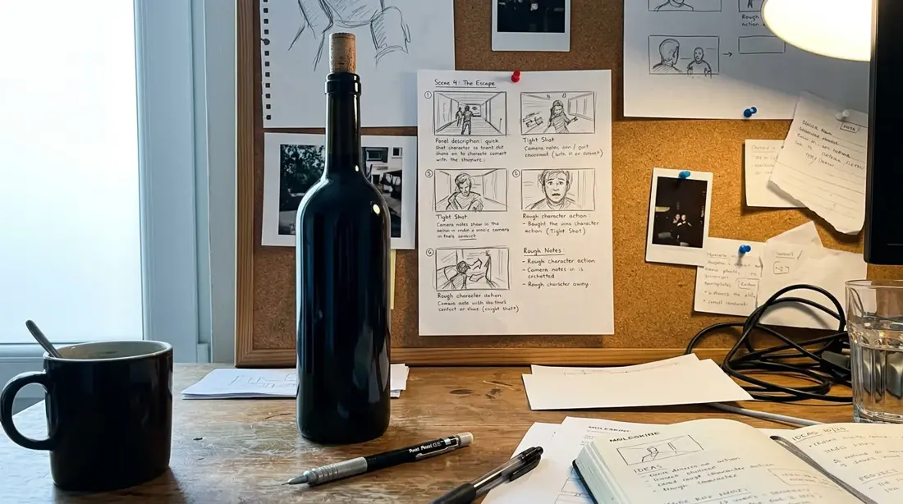
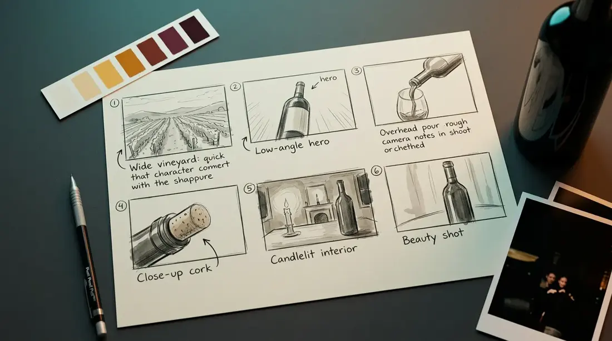

Single Shot
From $1,500per project
5–7 business days
- 1× polished video up to 30s
- Original music & sound design
- 2 revision rounds
- 4K master + 9:16 / 1:1 / 16:9 exports
Home / Video Production
Pillar 01Baez Studio produces brand films, brand revivals, game and lore cinematics, and paid-social hook packs using generative AI compositing finished by a 15-year commercial editor. Projects start at $1,500 and deliver 4K masters in 5 to 21 business days.
Last updated: November 2026
Six formats, each built for a specific job. Every one is directed by a human and finished in a professional NLE, never exported straight from a generator.
Product launches, founder narratives and category campaigns. The film that lives on the homepage, opens the keynote and closes the pitch deck.
Re-introduce an established brand with full cinematic weight, so long-time customers feel they are discovering it for the first time.
Game trailers and world-building films: characters, factions, origin stories. The asset that turns an audience into a community.
Modular hook, body and CTA cuts for Meta, TikTok and YouTube Shorts, built so your media buyer can test openings without a re-edit.
Runway, Sora, Veo, Higgsfield and ComfyUI plates composited over live action or product shots in After Effects and Resolve.
Code-driven templates that render dozens of on-brand variants from a spreadsheet: new prices, cities, offers or product names in minutes.
Brief, concept, production, delivery. Scope is locked before rendering starts, and revisions are scheduled into the timeline.
Goals, audience, platforms, deadline and references. A one-day answer on fit, scope and price.
Script, storyboard, style frames and locked character or product references, approved in writing.
Generation, compositing, edit, score and sound design, with review links as each stage lands.
4K master plus 9:16, 1:1 and 16:9 exports, captioned versions and project files on request.
From the Cellar Reserve spec ad: four frames from the brief board to the graded 4K master.


A Hook Pack splits every spot into swappable hook, body and CTA segments, so one shoot becomes a test matrix. Three hooks against one body give your media buyer three clean A/B tests from day one.
| Segment | Length | Job |
|---|---|---|
| Hook | 0–3s | Stop the thumb: motion, contrast, a question |
| Body | 3–12s | Show the product doing the thing |
| CTA | 12–15s | One action, on-screen and in VO |
Every package ships in
Meta Reels and Stories, TikTok, YouTube Shorts, YouTube in-stream, LinkedIn and X, plus a 4K master for web and events.
AI production reaches finished 4K in days at a fraction of the crew cost. Traditional shoots and 3D still win for some jobs, and Josh will tell you which one yours is.
| Factor | Baez Studio AI production | Traditional live-action or 3D |
|---|---|---|
| Typical timeline | 5–21 business days | 4–12 weeks |
| Crew & locations | Director-editor plus generative tools | Crew, talent, locations, render farm |
| Starting budget | From $1,500 | Often $15,000+ |
| Variants for testing | Remotion templates, dozens per day | Manual re-edits |
| Best when | Worlds, moods, products in impossible places, fast campaigns | Real people on camera, CAD-accurate engineering visuals |
Last updated: November 2026
Video projects start at $1,500 for a Single Shot and run to $7,500 a month for an always-on retainer; AI business stacks start with a $750 audit. Every figure below is a published starting point or typical range, scoped exactly on a free 15-minute call.
From $1,500per project
5–7 business days
From $2,500per project · paid social & A/B testing
7–10 business days
From $5,000per project
14–21 business days
From $7,500per month · weekly delivery
Ongoing
$750 – $1,500one-time · 100% credited to a build started within 30 days
5 business days
$2,500 – $6,500one-time build
2–3 weeks
$7,500 – $18,000one-time build
3–5 weeks
$500 – $1,500per month · optional · cancel anytime
Month-to-month
Custom from $4,500 – $9,500per month
Monthly partnership
A hybrid retainer means the campaign film and the system that distributes it are designed together. The hero cut, the 9:16 hooks, the launch email, the newsletter feature and the flyer all come from the same brief and the same source sheet, so nothing gets lost between the creative team and the ops team.
Founding AI-Stack Partner slots: a limited number of stack builds are taken each quarter so every system gets senior, hands-on architecture. Backed by Josh Baez's 15+ years of commercial production since 2008.
AI cinematic production generates photoreal scenes, characters and environments from references and prompts, then a human editor composites, grades and scores them. It typically reaches finished 4K in days instead of the weeks a 3D pipeline needs, at a fraction of the crew cost, while 3D still wins for engineering-accurate product CAD.
A Single Shot takes 5–7 business days, a Hook Pack 7–10, and a Signature Brand Film 14–21. Retainer clients get first drafts within 5 business days and same-week urgent cuts.
Generative work runs through Runway, Sora, Veo, Higgsfield and ComfyUI, with ElevenLabs for voice. Every project is finished in Premiere Pro, DaVinci Resolve or After Effects, and Remotion handles programmatic variants.
Signature Brand Films use reference locking: approved character sheets, product plates and style frames feed every generation, and anything that drifts is composited or rebuilt by hand in the edit. Inconsistent shots never reach your review link.
Remotion renders video from code and data, so one approved template can output dozens of variants with different hooks, prices, cities or product names. It is ideal for A/B testing paid social without re-editing every cut.
Single Shot includes two rounds. Hook Pack and Signature Brand Film include three structured rounds: Direction, Refinement and Polish. Revisions are built into the timeline, never billed as extras.
Yes. Spec pieces made to demonstrate a style are labelled Spec Ad Showcase in the portfolio, and clients choose how to disclose AI use in their own campaigns, in line with platform policies.
Bring the launch, the campaign or the spreadsheet that eats your week. You leave with a scope, a price range and a timeline, even if we never work together.